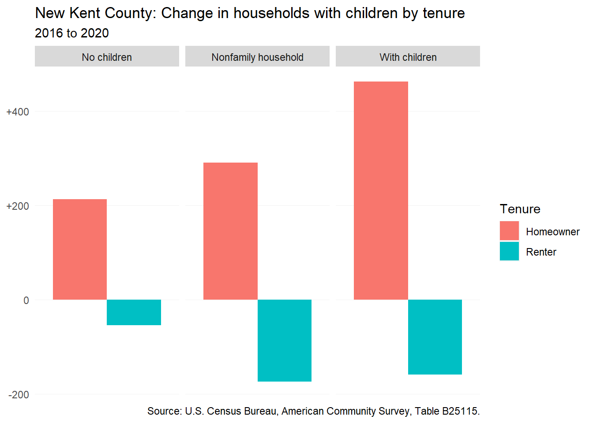
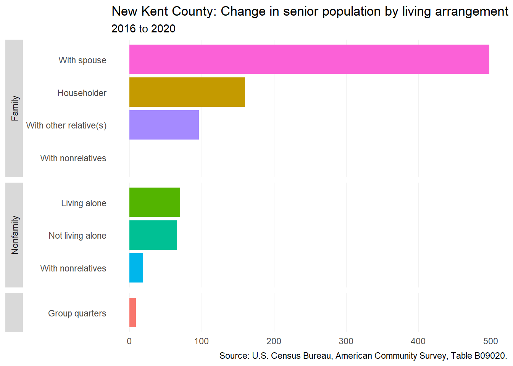
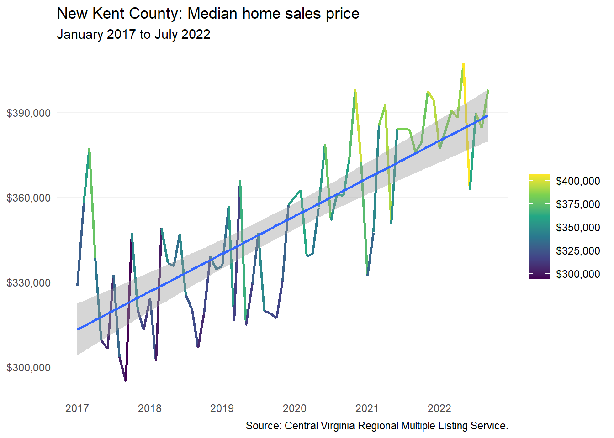
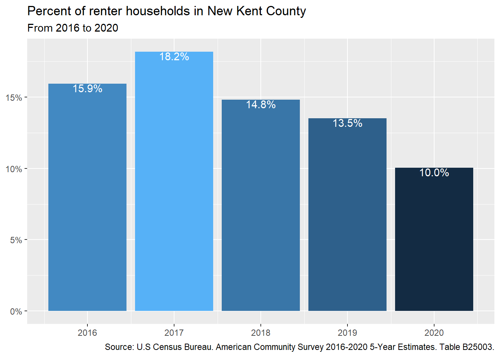
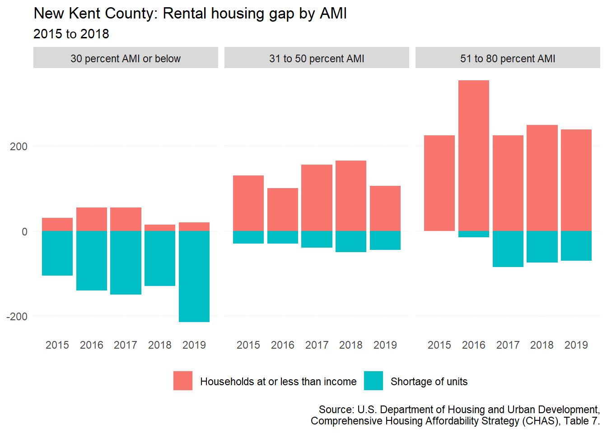

18 Powhatan County
This chapter is a summary of the major changes to the Powhatan County’s population and housing market in the past five years.
18.1 Takeaways
- Powhatan County is growing like many other parts of the region — passing the 30,000 mark in 2020.
- More and more homeowners without children have been moving into the county — nearly 600 households between 2016 and 2020.
- Unlike other localities, the county saw a decrease of nearly 100 seniors living alone between 2016 and 2020.
- Median renter household income in the county saw a 20 percent increase in recent years, while fewer and fewer renters in the county.
- Although only 29 enrolled students experienced homelessness during the 2019-2020 school year, this was a doubling from 2016-2017 when the count was at 15.
18.2 Demographic and socioeconomic changes
18.2.1 Population changes
Despite a dip in population from 2014 to 2015, Powhatan County has been on an upward trend for the most part. In 2020, the county reached a population of 30,333 — an overall increase of 8 percent since 2010.
Like many other rural counties in the region, Powhatan County’s population growth in recent years has been due to domestic migration. Between 2020 and 2021, 772 new residents came to the county from somewhere else within the country.
18.2.2 Household characteristics
The county has seen a decreasing number of renter households across the board. But homeowners continue to come to the county — especially homeowner households with no children. By 2020, there was an estimated 590 more homeowners with no children than in 2016.

The greatest increases in the senior population in the county have been among seniors in family households (either living with a spouse or are the head of household). In contrast to other localities, Powhatan County is seeing a decline in seniors in nonfamily households.

18.2.3 Income and wages
Both homeowner and renter median household income has been on the incline from 2016 to 2020 in the county. For homeowners, there has been an increase of 8 percent, while renters experienced a 20 percent increase.
18.2.4 Persons with disabilities
In the county, there has been an increase in individuals with independent living difficulties that are 65 years old and older (+204) between 2016 and 2020. For individuals younger than 65, there has been a decline in individuals with independent living difficulties.
18.3 Housing supply and market changes
18.3.1 Homeownership
Powhatan County median home price has been on the rise. From a low of $282,084 in March 2017 to a high of $519,559 in May 2022, median home price in the county has increased nearly 84 percent. Although the over $500,000 median home price may represent a seasonal spike, median home price has generally been trending upward and likely to stay above $500,000 in the coming years.

18.3.2 Rental
Renter households have been in decline since 2016 when roughly one in ten households in the county were renters. This share has dropped by four percentage points down to 7 percent renter household in 2020. Despite the declining number of renter households in the county, 2021 saw the completion of 200 new rental units at the eastern edge of the county.

CoStar lists three multifamily properties in the county; two are located along Old Buckingham Road near the county seat, while the third is located at the eastern edge of the county near Midlothian. There was a 39 year period between the construction of both Powhatan Apartment buildings and the Artistry.
The development of the Artistry at Winterfield potentially represents growing housing demand from the western edge of Chesterfield County’s Midlothian community. This luxury multifamily property has an average asking rent of $1,888.
| Property name | Year built | CoStar rating | Vacancy rate | Units |
|---|---|---|---|---|
| Artistry at Winterfield | 2021 | 4 | 7.8% | 200 |
| Powhatan Apartments | 1982 | 2 | 4.6% | 11 |
| Powhatan Apartments | 1982 | 3 | 4.6% | 11 |
18.3.3 Housing assistance
The National Housing Preservation Database lists no federally-assisted housing properties in New Kent County.
18.3.4 Naturally-occurring affordable housing
Powhatan Apartments (both locations) represent the county’s naturally-occurring affordable housing based on the definition of NOAH outlined in this report. Rent data is unavailable for Powhatan Apartments via CoStar.
In addition to Powhatan Apartments, there is a small manufactured home community located near the cross roads of Maidens Road (US-522) and Huguenot Trail that consists of at least six homes.
18.4 Gap analysis
18.4.1 Affordability of current housing stock
With increasing renter household incomes in the county, the gap between income needed to afford the typical home price and typical renter income has been narrowing. In 2016, the gap stood at nearly $12,000, but by 2020 the gap had decreased to just below $7,000.

As of 2018, there was a 70 unit rental home shortage for households making less than 80 percent AMI. This was a major decline from 2015 when the shortage was 215 — mainly for 30 percent AMI or less households. The deficit has decreased significantly among extremely and very low-income households, but has increased for higher income households.

18.4.2 Impact of housing costs
The share of cost-burdened renters has decreased from nearly 38 percent of renter households to 23 percent in a short period. For homeowners, the share of cost-burdened households has decreased only slightly — going from 24 percent to 21 percent over three years.
Available data from William and Mary’s Project HOPE shows that the number of enrolled students experiencing homelessness in the county has increased in recent years. The county’s McKinney-Vento Act data showed that the number of students experiencing homeless has doubled from the 2016-2017 school year when the number was 15. By the 2019-2020, that number was 29.